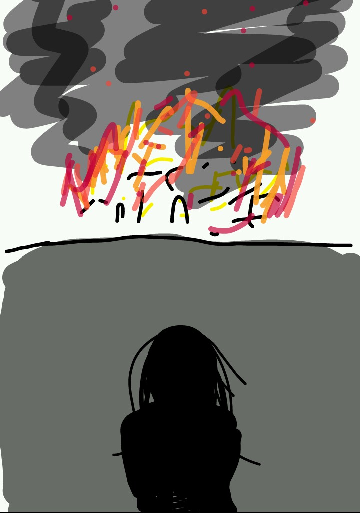

그녀는 예상을 했다. 더 이상 물러날 수 없다고 몸의 감각이 알려주고 있었다. 되돌아갈 수 없다는 걸 너무나 알기에 뒤도 보지 않고 앞만 보고 달려야 했다. "퍼! 펑퍼펑펑!" 굉장한 폭발음이 울려 퍼졌다. 엘레나의 눈에선 반짝거림이 흐트러져 떨어져 나갔다. 엘레나는 알 수 있었다. 더 앞으로 나갈 수밖에 없다고 마음속에선 외치고 있었다. 흔들리는 다리를 지나 우거진 숲속으로 들어갔다. 잔가지들이 스칠 때마다 엘레나의 야윈 팔에서는 피가 보였다. 엘레나는 휘청거리는 다리를 붙잡고 넘어질 듯한 몸뚱이를 일으켜 다시 달렸다. 스쳐가는 물체가 보이지 않자 그녀는 멈출 수 있었다. 아니 멈출 수밖에 없었다. 엘레나는 앞에 보이는 거대한 붉은빛에 무릎을 꿇어 버렸다. 마을 하나가 일렁거리며 기분 나쁜 검은 연기를 내뿜고 있었다. 사람들의 애처로운 비명소리가 찢어질 듯 들려왔고 아기 울음소리도 끊이지 않았다. 엘레나는 미세하게 떨림을 느꼈다. 그 떨림은 더욱 커지더니 모든 걸 잠재웠다. 그리고 그녀는 쓰러졌다.
「하얀 꽃밭이었다. 온 세상이 하얗게 물들인 것 같았다. 아름다웠다. 이 세상이 아닌 것 같았다. 햇빛은 눈이 너무 시릴 정도로 강렬했다. 눈살을 찌푸리다 눈물이 나왔다. 눈물이 꽃잎을 적시더니 하얀 꽃밭은 하얀 나비가 되어 날아갔다. 그리고 암흑이 찾아왔다.」 # 쓰려져 있는 엘레나에게 검은 그림자가 드리워졌다. 그 그림자는 그녀를 삼키고 사라졌다. 17년 후 한 소년이 숲속에서 길을 잃어버렸다. 고아인 그는 마을 사람들을 피해 굶주림을 해결하고자 인적 드문 길로만 다니다 이런 낭패를 겪게 되었다. 소년은 아래 입술을 깨물고 지금의 위치를 파악하려 애썼다. 혹여나 근처에 계곡이 흐를까 귀를 기울였지만 울창한 나무와 덤불 사이에서 새의 울음소리만 들릴 뿐이었다. 소년은 한숨이 나왔다. "푸드득" 소리가 들리는 쪽으로 고개를 재빨리 돌렸지만 새는 이미 그 자리를 떠나 버렸다. 허기진 배는 허탈감에 울부짖었고 그는 주저앉았다. "바스락" 무언가 그에게 다가오고 있었다. 생각에 잠긴 소년은 허공을 응시할 뿐 인기척을 느낄 기운조차 없어 보였다. "퍽" 둔탁한 소리와 함께 소년은 쓰러졌다. 쓰러진 소년에게 검은 그림자가 드리워졌고 그 자리에서 소년을 다시 볼 수 없었다.
"꼭 이렇게까지 해야 했나?" "이렇게 하지 않으면 우리 모두 죽는다는 걸 몰라서 그런 말이 나오나, 자네." "그래도...." "어차피 고아라 아무도 찾지 않을 걸세." "크흠..." 흔들리는 마차 안. 익숙한 두 남자의 목소리. 그리고 자신의 묶여 있는 손과 발. 소년은 정신이 들었는지 상황을 파악하려 애썼다. "으으 아.. 파." 뒤통수에서 아려오는 고통은 좋지 않은 상황임을 깨닫게 해줬다. '난 어디로 가는 거지..' 소년은 남자들의 대화에 귀를 기울였지만 애석하게도 더 들리지 않았다. '배고파....' 극도의 허기짐에 소년은 스르르 눈을 감아 버렸다. 그리고 소년이 다시 눈을 떴을 땐 마차 안이 아니었다. "이거 살아있는 거지?" "그럼요. 암요, 암요." "죽은 거라면 너희는 목을 내놓아야 할 것이야." "히익" "사.. 살아있습니다요." 한 여인과 눈이 마주친 소년은 흠칫 놀랐다. 그리고 알 수 없는 공포가 엄습하였고 소년은 사시나무처럼 떨었다. 생사 확인을 한 이디스는 씩 미소가 번졌고 눈꼬리가 가늘게 휘었다. "그래, 가봐." "저..." "너희가 원하는 건 나가면 있을 거야." "네, 네!" 두 남자는 문을 나서자 윽 소리와 함께 쓰러져 바닥에 피를 적셨다. "저것들 안 보이게 치워놔." 이디스의 명령 소리가 끝나기 무섭게 두 남자의 사체는 보이지 않았다. "멍청한 것들." 이디스는 쓰러져 있는 소년을 훑어봤다.
여인은 한숨을 내쉬었다. 그리고 하녀 한 명을 부르더니 소년을 씻기고 먹이라 했다. 소년은 묶여있던 밧줄이 풀리고 하녀가 이끄는 대로 따라갔다. 소년이 나가고 이디스는 소년을 묶어놨던 밧줄을 응시하며 생각에 잠겼다. '지금이라도 찾아내서 다행이야.' # 소년은 난생처음 느껴보는 따뜻한 물에 날카로운 긴장감이 씻겨 나갔다. "저기요..." 하녀는 소년의 부름을 무시한 채 묵묵히 소년을 씻겼다. 소년의 수척한 몸은 더욱 도드라져 보였다. 하녀는 소년에게 새 옷을 입혀줬다. 그리고 소년을 식당으로 데려갔다. 소년은 화려하게 차려진 식탁 앞에서 이성을 놓아 버렸다. 눈앞에 보이는 고기를 덥석 잡아 한입 베어 물고 허겁지겁 삼켜 먹었다. 하녀는 물러났고 요란한 식사 소리만 식당을 가득 메었다. 20년 전 엘레나는 같은 식당에서 식사를 하고 있었다. 그녀의 맞은편에는 이디스가 앉아 식사를 하고 있었다. 이디스는 엘레나를 보며 미소를 지었고 입을 열었다. "너와 함께 식사할 수 있다니 정말 기뻐." "그런가요. 그리 말씀해주시니 영광입니다." "매일매일이 오늘 같으면 좋겠다!" 이디스는 의미심장한 미소를 지었고 엘레나는 옅은 미소를 지으며 마저 식사를 했다. 이디스의 직속 시녀인 줄리아가 이디스에게 다가가 귓속말을 했다. 이디스는 고개를 끄덕거렸고 줄리아는 물러났다. 여러 명의 하녀들이 들어왔고 식사를 마친 접시들이 치워졌다. 그러고 나서 많은 양의 디저트가 실려 나왔다. "어떤 걸 좋아할지 몰라서 다양하게 준비해놨어. 네가 좋아했으면 좋겠다." 엘레나는 행복해 보이는 이디스를 바라보며 웃어주었다.
"오늘도 날씨가 참 좋은 거 같아. 오늘은 어디로 가볼까?" 이디스는 빙그르르 돌며 그녀에게 미소 짓어주는 엘레나를 쳐다봤다. "오늘 아랫마을에서 밤 축제를 한다고 하는데 거길 가볼까?" 이디스는 엘레나에게 싱긋 웃으며 줄리아를 불렀다. 줄리아는 이디스에게 다가가 그녀를 모시고 방을 나섰다. 방에 홀로 남겨진 엘레나는 창문 사이로 구름 한 점 없는 맑은 하늘을 올려다봤다. # 아랫마을은 온통 축제 준비로 한창이었다. 먹거리 장사를 위해 식재료 준비부터 시작으로 거리 곳곳에 축제 분위기를 내고 있었다. 해가 저물어 가고 진정한 축제의 시작을 알리는 밤이 찾아왔다. 엘레나와 이디스는 마차에서 내려 마을 중심가로 들어섰다. 마을 주민들은 이제 막 축제를 즐기고 있었다. 거리에는 조그마한 등불에서 붉은빛, 푸른빛 등 현란한 오색빛을 내뿜으며 아이들은 길거리 음식을 한 손에 들고 뛰놀고 있었다. 한 아이가 뒤따라오는 또래를 보며 달리다가 엘레나와 부딪쳐 엉덩방아를 찧었다. 엘레나는 아파하는 아이에게 손을 뻗어 일으켜 세워줬다. 그녀의 옆에 서있던 이디스는 그 아이를 조용히 쳐다보았다. 아이는 이디스와 눈이 마주치더니 기겁하며 딸꾹질을 연신 해댔고 아이는 자신도 모르게 입을 틀어막았다. 뒤따라오던 다른 아이는 딸꾹질하는 아이와 부딪쳤고 그 아이의 시선을 따라 고개를 들었다. 엘레나를 보며 헤벌쭉 웃다가 이디스를 보고 얼어붙었다. 엘레나는 아이들의 행동에 시선집중되기 전 이디스를 데리고 인적 많은 곳으로 이동하였다. 그곳에는 축제의 재미를 더하기 위해 몇 명의 마을 사람들이 동물 가면을 쓰고 춤을 추고 있었다. 엘레나는 동물 가면 두 개를 구매해 이디스에게 씌워줬다. "참 잘 어울리십니다." 이디스는 입꼬리가 올라갔다. 그리고선 가면을 쓴 엘레나의 손을 잡고 춤 무리와 어울려 춤을 췄다.
춤 삼매경인 엘레나와 이디스에게 동물 가면을 쓴 거구의 남성이 다가왔다. 이에 사자가면을 쓴 남자가 뒤따라 갔다. 거구의 남성은 엘레나의 팔을 낚아챘으나 뒤따라 오던 남자가 그 남성의 팔을 잡아 가로막았다. 거구의 남성은 엘레나를 대강 훑어보더니 남자를 째려봤다. 남자는 그의 시선에 잡은 손과 두 눈에 힘을 주며 입을 열었다. "이 영애께 무슨 볼일이라도 있으십니까." "당신이 무슨 참견이오." 말이 끝나기 무섭게 거구의 남성은 엘레나의 팔을 세게 잡아당겼다. 그녀는 휘청거린 듯 보였으나 미동조차 없었다. 엘레나 옆에서 춤을 즐기던 이디스는 귀찮은듯한 표정으로 남자를 보았고 남자는 이디스와 눈이 마주치자 고개를 끄덕였다. 이를 본 엘레나는 불길함을 예감했다. "제가 부탁했던 일이 끝났나 봅니다. 잠시 자리를 비워도 되겠습니까?" 엘레나는 자유로운 한쪽 손으로 남성의 팔을 잡은 남자의 손을 거두었다. 남자가 당혹한 기색을 보였고 엘레나는 남자에게 미소를 짓어줬다. 엘레나는 거구의 남성을 쳐다보며 입을 열었다. "어디로 가면 되는 겁니까. 앞장서세요." 거구의 남성은 엘레나의 태도에 의아했지만 그녀의 팔을 놓지 않은 채 엘레나를 어디론가 데려갔다. 이디스는 멀어져 가는 엘레나를 흥미롭게 쳐다봤다. "허튼짓하면 처리해." 이디스의 입술이 다물어지는 순간 사자가면을 쓴 남자는 자취를 감췄다. # 거구의 남성은 엘레나를 인적 드문 골목으로 데려갔다. 남성은 주위를 두리번거리더니 사람이 없다는 걸 확인되고서야 그녀의 팔을 놔줬다. 그러고 나서 그녀를 빤히 쳐다보며 입을 열었다. "당신, 함께 있던 여인이 누군지 아시오?" "무슨 말씀을 하시는지 모르겠습니다만." "저 여인이 누군지 진정 모른단 말이오?" 남성은 언성을 높였고 다시 한번 주변을 살피고 입을 열었다. "위험할 뻔했단 걸 아시오. 내가 아녔으면 당신은 이미 저세상 사람이었을 것이오." "괜찮습니다. 그리 걱정하실 분은 아닙니다." "난 말했소. 죽어도 내 탓하지 마시오." 남성은 이상한 느낌을 받고 엘레나를 두고 그 자리를 떠났다.
엘레나는 춤 무리가 있던 곳으로 다시 돌아왔다. 춤 무리에서 춤을 추고 있는 이디스를 발견하였다. 그 모습에 엘레나는 미소가 짓어졌고 이디스에게 조심스레 다가갔다. "많이 기다리셨습니까?" "막 지루하던 참였어." 눈꼬리를 휘며 웃는 이디스는 엘레나의 손을 잡고 춤 무리에서 벗어나 마차가 세워져 있는 곳으로 갔다. 마부가 마차 쪽으로 오는 두 여인을 발견하곤 출발 채비를 하였다. 엘레나와 이디스는 마차에 탑승하였고 마차는 출발하였다. # 큰 폭발음과 함께 땅이 흔들렸다. 마차가 흔들리고 말들은 거친 울음소리를 내며 날뛰었다. 마차가 멈추자 엘레나는 이디스의 상태를 확인하고 마차에서 내렸다. 마부가 말들을 진정시키고 있었고 주변에는 피해가 없어 보였다. 폭발음에 비해 주변이 조용해지자 이상하게 여긴 엘레나는 황급히 마차 문을 열었다. 마차 안에 있어야 할 이디스는 보이지 않고 사자가면을 쓴 남자가 기절해있었다. 그녀는 서둘러 마차에서 벗어나 주위를 둘러봤다. 진정된 말들을 쓰담고 있는 마부와 눈이 마주쳤다. 마부의 눈을 읽어낸 엘레나는 고개를 돌려 마차에 탔다. 마차는 출발했고 그녀는 기절해있는 남자를 깨웠다. "무슨 일이 벌어진 겁니까? 당신은 왜 기절해있고 공녀께선 어디로 가신 겁니까!" "이디스님은... 더 이상 이곳에 계실 수 없게 되셨습니다." "무슨..." "마부가 저택까지 데려다주실 겁니다. 이디스님은 잊어주십시오." 엘레나가 더 물을 새도 없이 남자는 마부에게 소리쳤고 그녀에게 정중히 인사한 후 사라졌다. 마부는 이디스의 저택을 향해 마차를 몰다가 방향을 틀었다. 그러고 나서 말들이 울었고 마차의 달리는 속도가 빨라졌다. 엘레나는 마차 문을 열고 고개를 내밀어 마부에게 소리쳤지만 마부에겐 바람소리와 말굽소리밖에 들리지 않았다.
그날 이후 엘레나는 아침 일찍 이디스의 저택에 갔다. 엘레나는 정원 입구에서 정원 손질하는 남자에게 다가갔다. 그녀를 본 정원사는 엘레나를 알아봤고 저택 안으로 황급히 들어갔다. 엘레나는 정원사를 따라갔지만 문은 열리지 않았다. 그림자가 짧아졌다 다시 길어졌고 달이 떠서야 엘레나는 이디스의 저택에서 발걸음을 돌려 집으로 돌아갔다. 다음날 해가 막 뜨기 시작한 이른 시간에 엘레나는 이디스가 사라졌던 곳으로 향했다. 그 당시의 상황을 다시 떠올렸고 공녀와 함께 탔던 마차의 바큇자국이 지나간 길과 그 부근부터 인근 마을까지 샅샅이 수색했다. 엘레나는 우두커니 서서 밤하늘을 올려다봤다. 별들이 반짝거렸고 별똥별 하나가 지나가고 있었다. # "이번에는 영영 못 오시려나..." "그럼 이 저택은 어떻게 되는 거지?" "새로운 주인님을 모시게 되지 않을까?" 주방에서 하녀들의 목소리가 들렸다. 지나가던 줄리아는 그 소리를 듣고 주방 문을 열었다. "다들 죽고 싶어 헛소리들 하는구나?" 하녀들은 놀래 멈칫하더니 바삐 할 일 하러 갔다. "금방 돌아오셔야 할 텐데..." 줄리아는 이디스의 방을 향해 고개를 돌려 응시하였다. # "싫어. 싫어. 싫다고!!!!" "캉! 짤그락" 이디스의 목소리와 함께 불쾌한 소음이 울려 퍼져나갔다. 이디스의 한쪽 발목에는 족쇄가 채워져 있었고 방은 어질러져 있었다. 방 한구석에 티 테이블이 놓아져 있었고 그 테이블 위엔 찻주전자가 놓여 있었다. 그 옆에는 찻잔을 입으로 가져가는 마법기사인 라데크가 의자에 앉아있었다. "네네~ 싫으셔도 안됩니다. 잘 아시는 분이 왜 그러셨어요?" "아악!!! 라데크 이 자식 가만 안 둘 거야!!!!" 라데크의 말이 끝나기 무섭게 이디스는 소리를 질렀다. 그 모습을 본 라데크는 히죽거렸다.
"이디스는 지금 어떠한가?" "아직... " "흠." "이대로면 언제든 도망가시려 할 겁니다." "그때 다시 잡아오면 되는 일 아닌가." "..." "예정대로 일을 진행하게." "예." 보좌관인 웨일드는 책상 위에 놓여 있는 서류들을 보고 있는 히센트 공작 전하께 정중히 인사를 하고 물러났다. 공작은 서류를 보다 말고 작은 액자를 지긋이 보았다. 액자의 사진 속에는 젊었을 적의 공작과 어린 여자아이가 있었다. 어린 여자아이는 이디스와 닮아 있었다. # "그냥 포기하시지 그래요? 피할 수 없는 운명인데, 힘 빼지 마시고 이참에 즐겨요." 이디스는 홀짝거리며 차를 음미하는 라데크를 뚫어지게 노려봤다. "너 같으면 즐긴다는 말이 나와?!" "어휴 고집은~" "이거나 빨리 풀어." 이디스는 족쇄가 채워진 발을 라데크에게 내밀었다. "제 힘으로 못 푸시는 거 아시면서 그러신다." "네가 채웠는데 못 푼다는 게 말이 된다 생각해?!" 이디스는 주변에 잡히는 데로 주워 라데크에게 던졌고 라데크는 고개를 옆으로 기울어 피했다. "향 참 좋다~" 라데크는 히죽거리며 차를 한 모금 마셨다. # 분주한 무리 속에 유유히 가로지르는 히센트 부인은 지나가던 하녀를 붙잡았다. "얘, 오늘 무슨 날이니?" "아, 그게... 이디스 아가씨께서 오셔서... 그럼 저는 이만" 하녀는 눈을 굴리며 입을 열었고 히센트 부인에게 허리 숙여 인사하고 후다닥 가버렸다. "뭔 저런 얘가 다 있담." '그보다 그 계집애가 왜 온 거지?' 히센트 부인은 다른 사람을 붙잡으려 고개를 돌렸다. 히센트 부인과 눈이 마주친 또 다른 하녀는 눈을 피했고 부인의 시선이 닿을 때마다 하녀와 하인들은 더 바빠 보였다.
"똑똑" "아가씨, 주인님께서 부르십니다." 문 너머로 하녀의 목소리가 들려왔다. "운명의 시간이 다가왔네요, 아. 가. 씨." 라데크는 이디스에게 싱긋거리며 찻잔을 내려놓았다. 이디스의 족쇄의 쇠사슬이 끊어졌고 이디스의 발목은 한결 자유로워졌다. "여기서 도망칠 생각 마세요. 족쇄가 조여 발목이 잘릴지도 모릅니다." 이디스의 시선은 족쇄에 향해 있었고 고개를 들어 라데크를 노려봤다. "마저 다 풀지그래?" "아시면서 또 그러신다~" "내 발목이 잘리는 걸 보고 싶어?!" "이걸 협박이라 하는 거죠? 이야 무섭네요." 이디스는 낄낄거리는 라데크에게 다가가 정강이를 차버렸다. 라데크는 맞은 정강이를 잡으며 아파했고 이디스는 문을 열고 나갔다. "주인님께서 서재에서 기다리고 계십니다." "안내해." "네." 이디스는 하녀의 안내에 따라 서재에 도착했다. 하녀는 노크 후 문을 열어줬고 이디스는 안으로 들어갔다. # "오랜만이네." "당신이 왜?" 이디스는 여기로 데려온 하녀의 얼굴을 보려 뒤돌았지만 문은 이미 닫혀있었다. "영영 안 볼 줄 알았는데, 여기서 널 보다니 참." 이디스는 히센트 부인의 목소리에 몸을 돌렸다. 히센트 부인은 기대고 있던 책상에서 일어나 책장으로 다가갔고 이디스는 주먹을 꽉 쥐며 부인을 쏘아봤다. 히센트 부인이 책에서 이디스 쪽으로 고개를 돌리자 이디스는 눈과 손에 힘을 풀었고 입꼬리를 올렸다. "히센트 부인. 세상이 뜻대로 안 되나 봅니다. 물론 그게 당연한 것이지만요." "뚫린 입이라" "바빠서." 이디스는 히센트 부인의 말을 자르고 나왔다. 하녀는 보이지 않았고 히센트 공작의 보좌관 웨일드 경이 서 있었다. "가시죠. 안내해드리겠습니다." 웨일드 경은 말이 끝나자마자 앞장섰고 이디스는 경을 뒤따라 갔다.